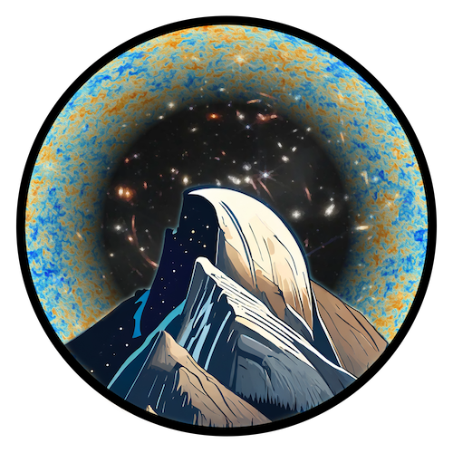

Research Projects
Here are some of the collaborations I am currently involved in.
Here are some of the collaborations I am currently involved in.
The HalfDome Cosmological Simulations are tailored to the joint analysis of ongoing and upcoming cosmological surveys such as DESI, PFS, Rubin LSST, Euclid, SPHEREx, Roman, Simons Observatory, CMB-S4, and LiteBIRD. These surveys have the potential to reach groundbreaking discoveries on multiple fronts such as the neutrino mass, dark energy, and inflation. However, these key science goals require the joint analysis of multiple datasets to break parameter degeneracies and calibrate systematics. By modeling the multi-wavelength observables in a correlated manner, our simulations are designed to enable such analyses.
We present cosmological constraints derived from peak counts, minimum counts, and the angular power spectrum of the Subaru Hyper Suprime-Cam first-year (HSC Y1) weak lensing shear catalog. Weak lensing peak and minimum counts contain non-Gaussian information and hence are complementary to the conventional two-point statistics in constraining cosmology. In this work, we forward-model the three summary statistics and their dependence on cosmology, using a suite of N-body simulations tailored to the HSC Y1 data. We investigate systematic and astrophysical effects including intrinsic alignments, baryon feedback, multiplicative bias, and photometric redshift uncertainties. We mitigate the impact of these systematics by applying cuts on angular scales, smoothing scales, statistic bins, and tomographic redshift bins. By combining peaks, minima, and the power spectrum, assuming a flat-ΛCDM model, we obtain S8≡σ8√(Ωm/0.3)=0.810+0.022−0.026, a 35% tighter constraint than that obtained from the angular power spectrum alone. Our results are in agreement with other studies using HSC weak lensing shear data, as well as with Planck 2018 cosmology and recent CMB lensing constraints from the Atacama Cosmology Telescope and the South Pole Telescope.